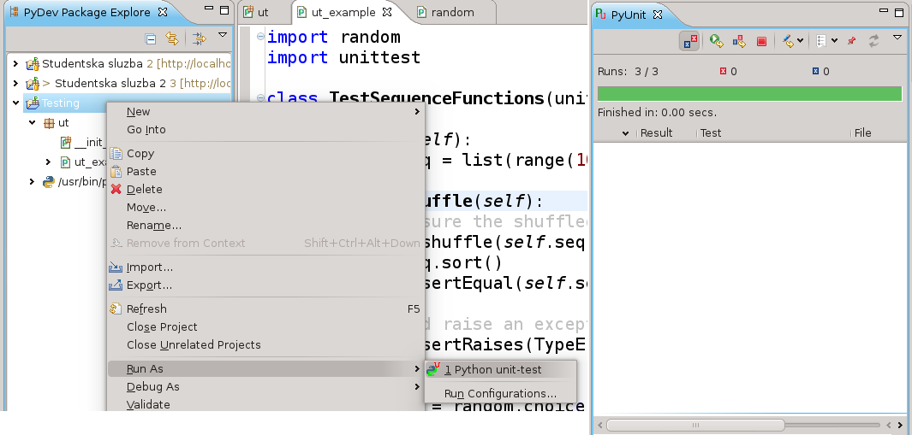

Kreirano 2023-01-16 Mon 18:20, pritisni ESC za mapu, m za meni, Ctrl+Shift+F za pretragu
Testovi se obično klasifikuju na osnovu toga gde se vrše u okviru razvoja softverskog proizvoda. Tako imamo:
Na osnovu ciljeva testiranja imamo još i podelu na:
Pored funkcionalnih osobina sistem mora biti u definisanim granicama određenih nefunkcionalnih parametara kao što su:
unittest modulu standardne python biblioteke.unittest modul poseduje
klasu TestCase koja služi za njeno kreiranje.import random
import unittest
class TestSequenceFunctions(unittest.TestCase):
def setUp(self):
self.seq = list(range(10))
def test_shuffle(self):
# make sure the shuffled sequence does not lose any elements
random.shuffle(self.seq)
self.seq.sort()
self.assertEqual(self.seq, list(range(10)))
# should raise an exception for an immutable sequence
self.assertRaises(TypeError, random.shuffle, (1,2,3))
def test_choice(self):
element = random.choice(self.seq)
self.assertTrue(element in self.seq)
def test_sample(self):
with self.assertRaises(ValueError):
random.sample(self.seq, 20)
for element in random.sample(self.seq, 5):
self.assertTrue(element in self.seq)
if __name__ == '__main__':
unittest.main()
Izvršavanjem ovog test modula:
python test_sequence.py
dobijamo sledeće:
... ---------------------------------------------------------------------- Ran 3 tests in 0.001s OK Ako želimo detaljniji ispis to možemo uraditi sa: python test_sequence.py -v Rezultat: test_choice (__main__.TestSequenceFunctions) ... ok test_sample (__main__.TestSequenceFunctions) ... ok test_shuffle (__main__.TestSequenceFunctions) ... ok ---------------------------------------------------------------------- Ran 3 tests in 0.001s OK
PyDev omogućava pokretanje svih testova direktno iz Eclipse IDE-a. Testovi će automatiski biti pronađeni i izvršeni a rezultati izvršavanja biće prikazani grafički.

U okviru izvršavanja testa pozivima metode tipa assert... tvrdimo da nešto
mora biti zadovoljeno. Ukoliko tvrdnja nije zadovoljena test će biti neuspešan.
assert metode su sledeće:
assertEqual(a, b) assertNotEqual(a, b) assertAlmostEqual(a, b) assertRaises(exc, fun, *args, **kwds) assertRaisesRegexp(exc, re, fun, *args, **kwds) ...
assert* metode pozivamo nad TestCase instancom. Dakle u okviru test metoda nad
self referencom.
Pun spisak assert metoda možete pronaći u dokumentaciji.
Ukoliko se setup ponavlja u više TestCase klasa može se koristiti nasleđivanje.
import unittest
class SimpleWidgetTestCase(unittest.TestCase):
def setUp(self):
self.widget = Widget('The widget')
def tearDown(self):
self.widget.dispose()
self.widget = None
class DefaultWidgetSizeTestCase(SimpleWidgetTestCase):
def runTest(self):
self.assertEqual(self.widget.size(), (50,50),
'incorrect default size')
class WidgetResizeTestCase(SimpleWidgetTestCase):
def runTest(self):
self.widget.resize(100,150)
self.assertEqual(self.widget.size(), (100,150),
'wrong size after resize')
Obično se logički povezane test metode definišu u jednom TestCase-u.
import unittest
class WidgetTestCase(unittest.TestCase):
def setUp(self):
self.widget = Widget('The widget')
def tearDown(self):
self.widget.dispose()
self.widget = None
def test_default_size(self):
self.assertEqual(self.widget.size(), (50,50),
'incorrect default size')
def test_resize(self):
self.widget.resize(100,150)
self.assertEqual(self.widget.size(), (100,150),
'wrong size after resize')
defaultSizeTestCase = WidgetTestCase('test_default_size')
resizeTestCase = WidgetTestCase('test_resize')
widgetTestSuite = unittest.TestSuite()
widgetTestSuite.addTest(WidgetTestCase('test_default_size'))
widgetTestSuite.addTest(WidgetTestCase('test_resize'))
Na primer:
def suite():
suite = unittest.TestSuite()
suite.addTest(WidgetTestCase('test_default_size'))
suite.addTest(WidgetTestCase('test_resize'))
return suite
ili jednostavnije:
def suite():
tests = ['test_default_size', 'test_resize']
return unittest.TestSuite(map(WidgetTestCase, tests))
TestSuite može biti kreiran upotrebom TestLoader klase na sledeći način:suite = unittest.TestLoader().loadTestsFromTestCase(WidgetTestCase)
unittest.TextTestRunner(verbosity=2).run(suite)
TestSuite od svih metoda TestCase koje počinju sa
test_.*TestRunner su klase čije instance omogućavaju jednostavno konfigurisanje i
pokretanje TestSuite instanci:suite = unittest.TestLoader().loadTestsFromTestCase(WidgetTestCase)
unittest.TextTestRunner(verbosity=2).run(suite)
TestSuite na sledeći način:suite1 = module1.TheTestSuite()
suite2 = module2.TheTestSuite()
alltests = unittest.TestSuite([suite1, suite2])
AssertionError izuzetka.import unittest
class DefaultWidgetSizeTestCase(unittest.TestCase):
def runTest(self):
widget = Widget('The widget')
self.assertEqual(widget.size(), (50, 50),
'incorrect default size')
class ToRomanBadInput(unittest.TestCase):
def testTooLarge(self):
"""toRoman should fail with large input"""
self.assertRaises(roman.OutOfRangeError, roman.toRoman, 4000)
def testZero(self):
"""toRoman should fail with 0 input"""
self.assertRaises(roman.OutOfRangeError, roman.toRoman, 0)
def testNegative(self):
"""toRoman should fail with negative input"""
self.assertRaises(roman.OutOfRangeError, roman.toRoman, -1)
def testNonInteger(self):
"""toRoman should fail with non-integer input"""
self.assertRaises(roman.NotIntegerError, roman.toRoman, 0.5)
class FromRomanBadInput(unittest.TestCase):
def testTooManyRepeatedNumerals(self):
"""fromRoman should fail with too many repeated numerals"""
for s in ('MMMM', 'DD', 'CCCC', 'LL', 'XXXX', 'VV', 'IIII'):
self.assertRaises(roman.InvalidRomanNumeralError, roman.fromRoman, s)
def testRepeatedPairs(self):
"""fromRoman should fail with repeated pairs of numerals"""
for s in ('CMCM', 'CDCD', 'XCXC', 'XLXL', 'IXIX', 'IVIV'):
self.assertRaises(roman.InvalidRomanNumeralError, roman.fromRoman, s)
def testMalformedAntecedent(self):
"""fromRoman should fail with malformed antecedents"""
for s in ('IIMXCC', 'VX', 'DCM', 'CMM', 'IXIV', \
'MCMC', 'XCX', 'IVI', 'LM', 'LD', 'LC'):
self.assertRaises(roman.InvalidRomanNumeralError, roman.fromRoman, s)
def factorial(n):
"""Return the factorial of n, an exact integer >= 0.
If the result is small enough to fit in an int, return an int.
Else return a long.
>>> [factorial(n) for n in range(6)]
[1, 1, 2, 6, 24, 120]
>>> [factorial(long(n)) for n in range(6)]
[1, 1, 2, 6, 24, 120]
>>> factorial(30)
265252859812191058636308480000000L
>>> factorial(30L)
265252859812191058636308480000000L
>>> factorial(-1)
Traceback (most recent call last):
...
ValueError: n must be >= 0
Factorials of floats are OK, but the float must be an exact integer:
>>> factorial(30.1)
Traceback (most recent call last):
...
ValueError: n must be exact integer
"""
"""
>>> factorial(30.0)
265252859812191058636308480000000L
It must also not be ridiculously large:
>>> factorial(1e100)
Traceback (most recent call last):
...
OverflowError: n too large
"""
import math
if not n >= 0:
raise ValueError("n must be >= 0")
if math.floor(n) != n:
raise ValueError("n must be exact integer")
if n+1 == n: # catch a value like 1e300
raise OverflowError("n too large")
result = 1
factor = 2
while factor <= n:
result *= factor
factor += 1
return result
if __name__ == "__main__":
import doctest
doctest.testmod()
Pokretanje modula sa doctest tipom test opisa se obavlja tako što se u modul doda sledeće:
if __name__ == "__main__":
import doctest
doctest.testmod()
I zatim se modul pokreće na standardan način:
python fact.py
Ukoliko nema nikakvog ispisa znači da su testovi prošli uspešno.
Ukoliko želimo detaljan ispis modul pokrećemo na sledeći način:
python fact.py -v
Ispis će sada biti:
Trying:
factorial(5)
Expecting:
120
ok
Trying:
[factorial(n) for n in range(6)]
Expecting:
[1, 1, 2, 6, 24, 120]
ok
Trying:
[factorial(long(n)) for n in range(6)]
Expecting:
[1, 1, 2, 6, 24, 120]
ok
...
# Sadrzaj fajla test_sample.py
def func(x):
return x + 1
def test_answer():
assert func(3) == 5
Startovanje:
$ py.test =========================== test session starts ============================ platform linux2 -- Python 2.7.3 -- pytest-2.3.5 collected 1 items test_sample.py F ================================= FAILURES ================================= _______________________________ test_answer ________________________________ > E E def test_answer(): assert func(3) == 5 assert 4 == 5 + where 4 = func(3) test_sample.py:5: AssertionError ========================= 1 failed in 0.01 seconds =========================
import pytest
def f():
raise SystemExit(1)
def test_mytest():
with pytest.raises(SystemExit):
f()
class TestClass:
def test_one(self):
x = "this"
assert 'h' in x
def test_two(self):
x = "hello"
assert hasattr(x,'check')
import pytest
@pytest.fixture
def smtp():
import smtplib
return smtplib.SMTP("merlinux.eu")
def test_ehlo(smtp):
response, msg = smtp.ehlo()
assert response == 250
assert "merlinux" in msg
import pytest
import smtplib
@pytest.fixture(scope="module")
def smtp():
return smtplib.SMTP("merlinux.eu")
def test_ehlo(smtp):
response = smtp.ehlo()
assert response[0] == 250
assert "merlinux" in response[1]
assert 0 # for demo purposes
def test_noop(smtp):
response = smtp.noop()
assert response[0] == 250
assert 0 # for demo purposes
Scope može biti:
session - nivo sesije tj. celokupno izvršavanje pytest-amodule - nivo Python modulafunction - nivo pojedinačne funkcije (podrazumevano).import smtplib
import pytest
@pytest.fixture(scope="module")
def smtp(request):
smtp = smtplib.SMTP("merlinux.eu")
def fin():
print ("teardown smtp")
smtp.close()
request.addfinalizer(fin)
return smtp # provide the fixture value
Sistem treba da radi na propisani način u projektovanim granicama. Posebno obratiti pažnju na granične vrednosti jednog ili više parametara. Na primer:
coverage.py.